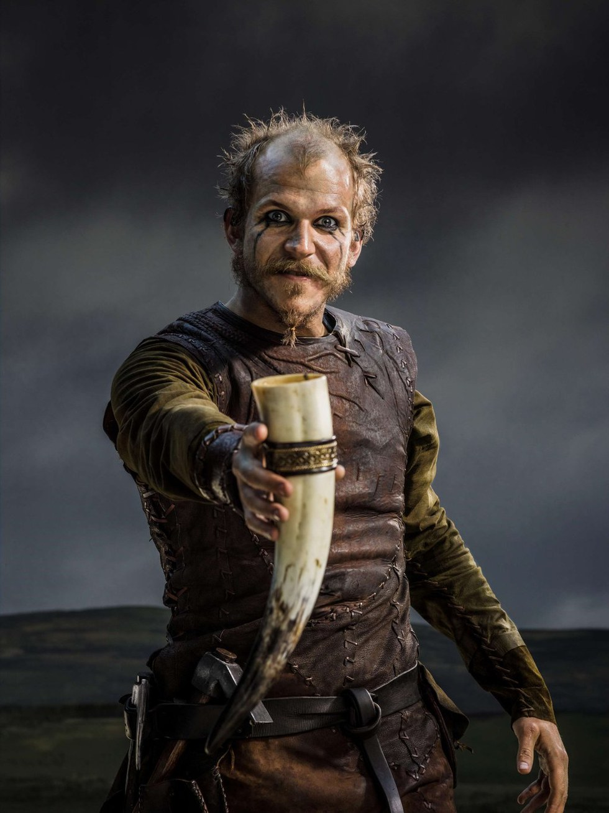

Back
VIKING BREW

Ingredients
- The Distilled Fear Of Your Enemies
- The Sweat Of The Brow Of A Plundering Viking
- The Essence Of The Evergreen Forests Of Old
- The Sweet Taste Of Victory Over One's Enemies
- Some Water
Steps
- Begin by wringing the essence of the forest and the sweet taste of victory into a large vat hewn from blessed oak wood
- Add the the sweat of plunder and the delicious fear of your enemies into the mixture
- Add a dash of water
- Commit unto Odin the thrill of your next raid and swear loyalty to the Allfather from now until Valhalla is upon you
- Serve neat in a bull horn or skull of your rival
If Odin's Brew Proves Insufficient To Sate Your Appetite, Here Be Stew